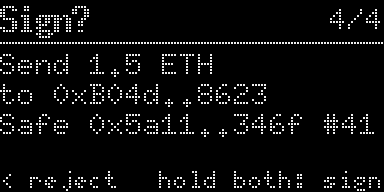

Hash-based owners for Safe
Get ready for turbulent times in math.
Every Safe is guarded by ECDSA keys. Quantum computers, or AI-accelerated math, may break elliptic curves sooner than planned. Winterlock gives your Safe owners whose signatures rest on hash functions alone.
Free check, no wallet needed
Is your Safe exposed?
Paste your Safe’s address. The check reads its owners and shows who could sign for it if elliptic curves broke, and what would change that.
Or look at a result first: a test Safe with hash-based owners.
The check only reads public data: nothing to connect, nothing to sign. Your Safe’s address goes to an RPC endpoint and to Safe’s Transaction Service, and nowhere else. No computer able to break elliptic curves exists today, and nobody knows when one will.
- Your keys are already public. Every executed Safe transaction reveals its signers' public keys: the first targets if ECDSA weakens.
- Hashes have no structure to attack. The standard post-quantum signatures rest on lattices, which do. Vitalik Buterin recommends hash-based constructions, and Ethereum's lean roadmap signs with hashes too.
- Nothing moves. Same Safe, same address, same app: only the owners change.
What it looks like
A member works with three things: a signer that holds the keys, an app in the browser, and the Safe app the team already uses.


How to use it
- Recovery phrase24 words, the member's only backup
- Stateless keycertifies key trees, signs messages, recovers a lost device
- One-time keysone per Safe nonce, sign transactions
- Owner contractchecks the hash-based signature when the Safe asks
- Your Safecounts k of n, unchanged
- Each member sets up the Winterlock signer: a 24-word recovery phrase, and an owner contract with the same address on every network.
- Add the Winterlock owners to your Safe, raise the threshold, then remove the ECDSA owners, checking modules, guards and fallback handlers for other paths to your funds.
- Work as before: members sign with the signer, Safe's app shows the queue, anyone can execute, and dapps connect over WalletConnect.
Same Safe, same address, no transfers. To try it on Sepolia, the signer's guide goes from install to a working Safe.
Live on testnet
A working prototype runs on Sepolia. Open these Safes in Safe's own app: every approval there is a hash-based signature, and Safe's app and services needed no changes.
A team Safe with Winterlock owners
Both owners of this 2-of-2 Safe are Winterlock contracts. Members propose and confirm through Safe's Transaction Service.
- Open the Safe in Safe's app
- The executed transaction on Etherscan
- An owner contract: 77 bytes, the same address on every network
Replace or cancel at the same nonce
Each member holds two keys per nonce: one to approve, and a spare to replace or cancel. Safe's app shows the cancellation as an ordinary rejection.
- The cancellation on Etherscan
Measured
- 1.8 KB
- per owner signature, within the size Safe's Transaction Service accepts
- ≈ 90,000 gas
- extra for each owner that signs a transaction
- ≈ 0.6M gas
- once per member and network, to create its owner and first keys
Works with dapps
Over WalletConnect, a dapp sees the team's Safe: transactions, sign-in, typed data and Permit2, tested with Reown's AppKit lab.
- A Permit2 approval for a dapp, approved on-chain by both members
Anyone can execute, even in Safe's app
Once members have confirmed, any account can send the transaction, even MetaMask from Safe's app, with no relayer.
A lost device isn't a lost Safe
The 24-word phrase restores a member on a new device with fresh keys, and the old device can't sign again.
- A 2-of-3 Safe with a moved and a restored member
- Their transaction on Etherscan
A research prototype: unaudited, testnet only, no real funds. Winterlock in one page, what building it showed, the design notes and measurements and the signer are on GitHub.
Talk to an expert
Checked your Safe and want to plan ahead? We help treasuries and DAOs read their result, weigh the options and try a migration on a testnet. Winterlock is a research prototype, so this is planning and piloting: nobody will ask you to move funds.
Book a 30-minute call Discuss on the Safe forum Open an issue on GitHub
We’re also looking for cryptographers to review the design, and Safe developers with opinions on owners, modules and guards.